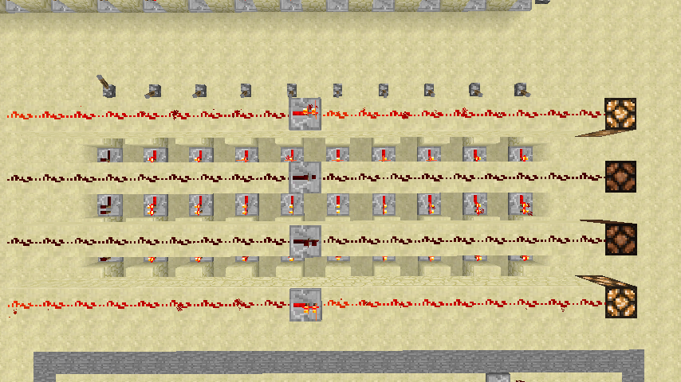

这篇文章是Minecraft搭建一个二进制计算器 的升级版。之所以写这篇文章，是因为要记录自己这几天的经历，以便以后重拾存档。
自从老家回来以后，我就开始继续学习计算机导论。 自学是一个有趣的事情，自由安排节奏，自由安排学习内容。在学到计算机运算原理的时候，我在想，为什么不把原先的二进制计算器升级为十进制、把加法扩展到加减乘除呢？
我觉得我能做到。怀着激动的心情我再一次打开了Minecraft。在这里要安利一个Minecraft版本，就是我的世界精灵，他内置了各种视频、教程、模组、启动器，再也不用到处跑论坛逛贴吧找资源了。比如我要使用创世神mod，可以直接在软件界面搜索，LitLoader启动器也已经内置，还有一些其他的mod，比如FPS优化、G键合成、NEI都有。说实话这个精灵启动器真是Minecraft党的福音。
做一件事，我们首先要明确要干什么，要怎么干。为了升级我们的计算器（暂时还没有上升到计算机层次），我们需要这样的几个模组。
说不如做，我这就开始一个一个实现需要的功能。
如果我们要实现一个100以内的十进制数转二进制数的功能，我们至少需要7位二进制，Bin(1111111)=Dec(2^7-1)=Dec(127)，即7位2进制数最大只能表示到127，如果加上负数那就需要8位二进制。现代计算机大多都是64位，即一个内存单元就是一个64位2进制数，而常见的int类型范围也是[-2^31,2^31-1]，即32位，我们这里的8位真是小巫见大巫。Anyway，先搞出一个简单的模型出来，将来再搞性能上的扩展也未尝不可。
我们把计算能力限定在[-99,99]的整数以内，负号可以之后再说，我们先解决两位正整数的表示问题。用户在输入的时候依次输入两位0到9的整数，比如56=5*10+6，十位上乘以10，个位上乘以1。由于二进制数域和十进制数域的相似性，我们可以这样在计算器中进行转换：
Dec(56)=Dec(5)*Dec(10)+Dec(6)=Bin(0101)*Bin(1010)+Bin(0110)=...因此，十进制转二进制需要这三个基本单元：
从下表可以看到，十进制0-9转二进制只要用穷举法就行了，标记好每一个数字对应的二进制数，由于每一次我们只选择一个十进制数字，所以可以取或然后输出。
| Dec | Bin |
0 | 0000 |
1 | 0001 |
2 | 0010 |
3 | 0011 |
4 | 0100 |
5 | 0101 |
6 | 0110 |
7 | 0111 |
8 | 1000 |
9 | 1001 |
给出一个Minecraft实现，上方从右到左是0-9，可见图中输入是Dec(9)，输出是Bin(1001)

关于乘法器和加法器，我们以后讨论。
这个就比较麻烦。根据我们的构想，计算结果会是一个8位的二进制数。这个二进制数转换成十进制，就要用到除法，例如：Dec(56)的二进制表达是Bin(00111000)，我们有：
Dec(56)=Dec(5)*Dec(10)+Dec(6)=Bin(0101)*Bin(1010)+Bin(0110)=Bin(00111000)那么就有：
Dec(56)/Dec(10)=Dec(5)...Dec(6)相当于：
Bin(00111000)/Bin(1010)=Bin(0101)...Bin(0110)这样转换以后，我们得到两个，一个是商Bin(0101)=Dec(5)是十位上的数字，一个是余数Bin(0110)=Dec(6)是个位上数字，因此还要一个二进制0000-1001转十进制0-9的转换器。因此，二进制转十进制需要这两个基本单元：
Bin(1010)），输出为两个4位二进制数二进制0000-1001转十进制0-9输入的是4位2进制数，不同的2进制数在同一位置上有相同的值，比如Dec(8)=Bin(1000)和Dec(9)=Bin(1001)，如果输出的是Dec(9)=Bin(1001)，Dec(8)=Bin(1000)也被激活了，因为Bin(1000)只需要首位为1，而Bin(1001)恰好首位为1。所以在这里我们应该将输入的2进制数与内置的二进制数进行比对，只有每一位上全部相等，才能输出为1，否则为0，这就保证了唯一性。
说起来容易，做起来困难。如何判断每一位上都相等呢？我们记输入的二进制数四个位置分别为A1、A2、A3、A4，内置的二进制数四个位置分别为B1、B2、B3、B4，那么我们要求的就是：
(NOT(A1 XOR B1)) AND (NOT(A2 XOR B2)) AND (NOT(A3 XOR B3)) AND (NOT(A4 XOR B4))
这里XOR就是相同取0，不同取1。
由于在Minecraft中AND的实现方式困难，我们把他全部转化成OR和NOT（OR操作只要红石导线相连就行了，在红石系统里面是最简单的门电路）。这样可以简化电路设计。
(NOT(A1 XOR B1)) AND (NOT(A2 XOR B2)) AND (NOT(A3 XOR B3)) AND (NOT(A4 XOR B4))
=NOT((A1 XOR B1) OR (A2 XOR B2) OR (A3 XOR B3) OR (A4 XOR B4))
我们下面还会接触到一些逻辑运算。在这里我们先简单介绍一下。 基本的三个逻辑符号就是与（AND，∧）、或（OR，∨）、非（NOT，¬），计算规则如下：还有一些运算规律收录在百度百科的逻辑运算词条，可以自行查阅。我们将会用到的比较多的公式是：
∧∨¬
in1 in2 out 111100010000
in1 in2 out 111101011000
in out 1001我们对最后一个公式做一个解释。异或（
A AND B = NOT((NOT A) OR (NOT B))A AND (B OR C) = (A AND B) OR (A AND C)A XOR B = ((NOT A) AND B) OR (A AND (NOT B))XOR，⊕）就是相同为0，不同为1，从下面的表我们可以看出计算过程：在下文我们只用逻辑符号（
A B A⊕B ¬A ¬B (¬A)∧B A∧(¬B) ((¬A)∧B)∨(A∧(¬B)) 11000000101010110111010100011000∧，∨，¬，⊕）进行推导。